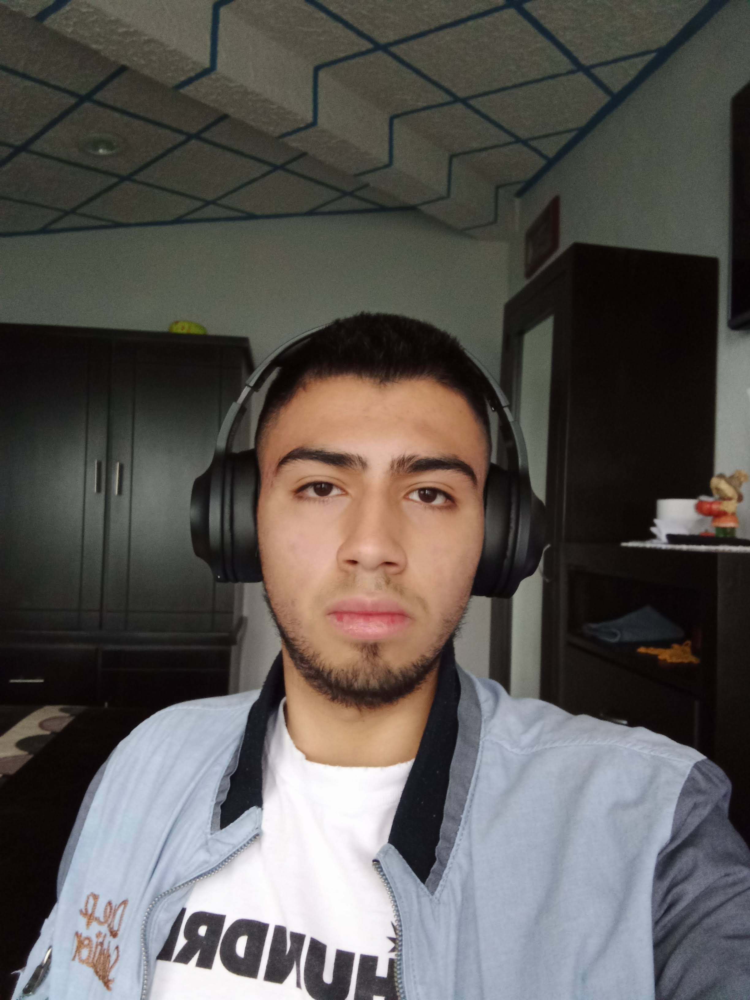
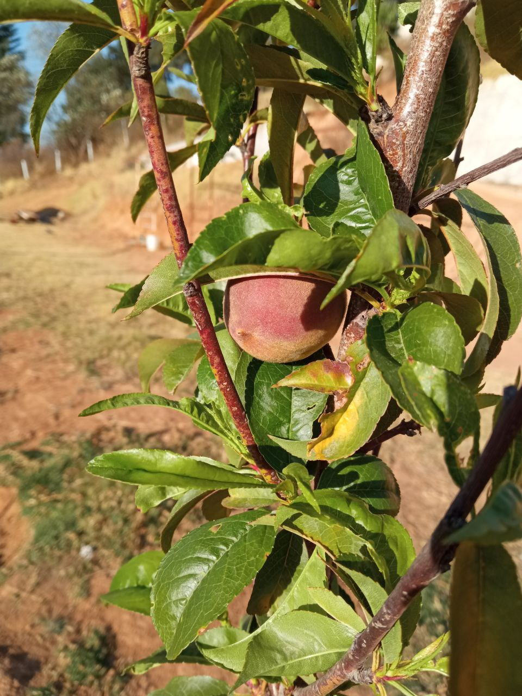
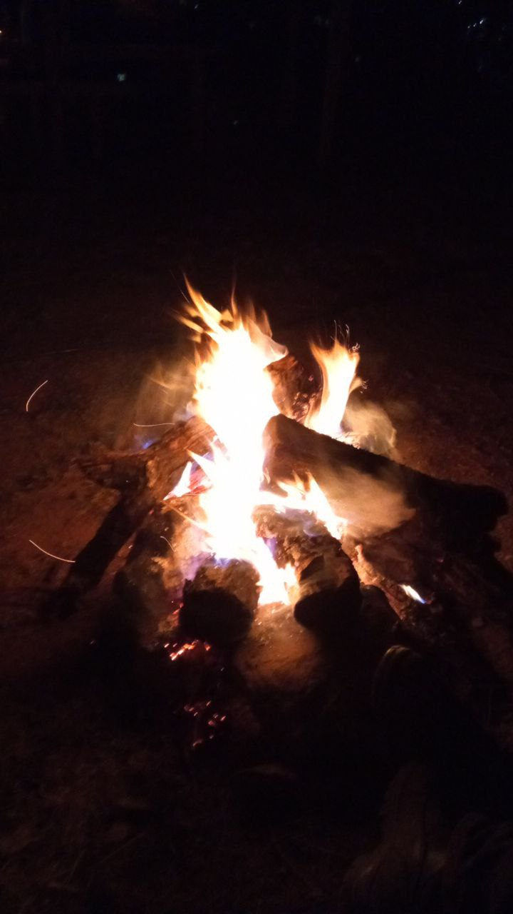
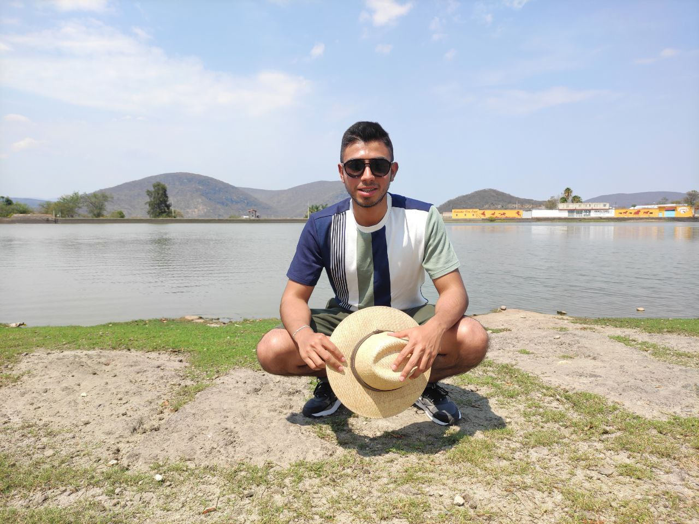

pabloAcosta's home on the internet ... ain't my web design skills sick?
Academic training:
Technician in machines with automated systems,
graduated from the Vocational School No.2 of Engineering and Physico-Mathematical
Sciences "Miguel Bernard Perales"
Currently studying the last semesters of the computer systems engineering
career at the Higher School of Computing of the National Polytechnic Institute,
specializing in the area of cybersecurity
eMail:
pacostaf1600@alumno.ipn.mx
My social networks:
<big>FOLLOW ME ON TWITTER</big>
<big>FOLLOW ME ON FACEBOOK</big>
Hobbies:
- listening to music and comedy
- read about politics
- gardening
- learn a bit of everything
- be with my family and friends




About cripto:
I find reticular cryptography very interesting, I think it is an example of the great capabilities
of humanity so that in the face of new cryptographic challenges we can continue to maintain security
in our communications.
Public key encryption uses traditional math to encrypt data, unlocking it only for those who have the key,
or can crack it. Instead, lattice cryptography uses huge grids with billions of individual points in thousands
of dimensions. Breaking the code means going from one specific point to another, something basically impossible
unless the path is known.
Even the US National Security Agency, which has long sounded alarm bells about the threat posed by quantum computers,
recently expressed confidence in lattice-based approaches.
More details at:
click here
<big>DOWNLOAD MY CV</big>
my public key:
CLICK HERE